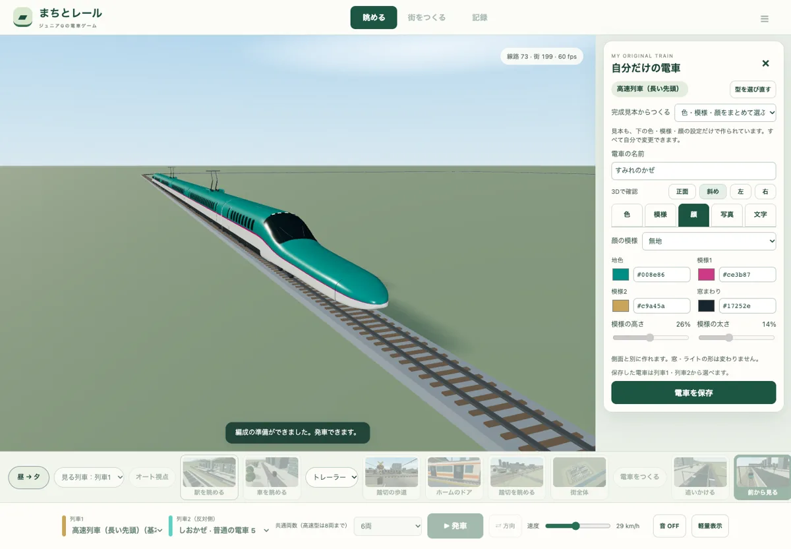

無料のブラウザ新幹線ゲーム
新幹線の先頭形状や配色を選び、二つの街を結ぶ高架線を走れます。

長い高架を走る
「街を選ぶ・つくる」から「都市間の高架」を開き、「電車を選ぶ」で新幹線を選びます。「この電車を使う」で線路に載せて発車。駅から高架に出たら、街並みが田園へ変わる様子を眺めてください。
車窓と外からの姿を比べる
車窓では線路の先の景色を、外からの視点では長い編成がカーブを抜ける様子を楽しめます。新幹線を自分の配色で走らせたいときは、工房で屋根と帯の色を変えた車両を保存しましょう。
ゲームで試す →